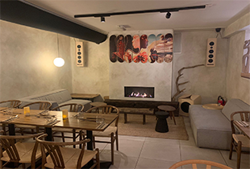
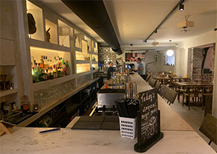

Het concept
Hearth is een plant-based restaurant en audiobar. Hier kun je heerlijk een avondje tafelen met live muziek en gezelligheid. Hier worden gerechten en cocktails geserveerd, welke allemaal iets met elkaar overeen hebben; vrij van dierlijke producten!

Wat is plant-based?
Plant-based is zoals het woord als zegt; gebaseerd op planten. Dit houdt in dat iets vrij is van dierlijke producten zoals: eieren, zuivel, vis, vlees of andere dierlijke producten zoals honing.
